|
Справка по программе Geo.Log |
|
Основное окно показывает карту в зависимости от настроек отображения. Настройки позволяют комбинировать несколько источников карт (растровые, векторные) в один вид. 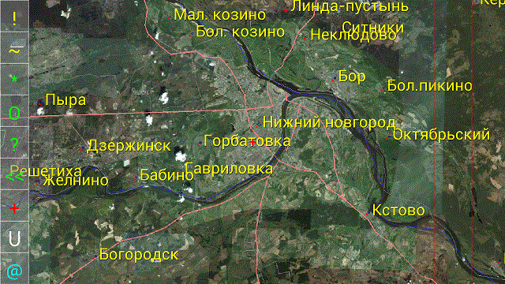 1. Правая – область навигации. В режиме «по умолчанию» данная область содержит две красные линии. Зона между первой и второй линиями служит для изменения масштаба изображения. Зона после второй — для поворота. Зона до первой линии — для перемещения изображения. В режиме «стрелки» область навигации содержит кнопки со стрелками для соответсвующих действий. 2. Левая область – область кнопок управления: “!” - кнопка обновления. Эта кнопка вызывает непосредственную перерисовку карты. “~” - кнопка настроек отображения. Открывает экран с различными настройками вида карты. “*” - “мои места”. Кнопка открывает экран со списком мест на карте, которые отобрал пользователь как часто посещаемые. “O” - “мои объекты”. Кнопка открывает экран со списком мобильных объектов, за которыми часто наблюдает пользователь. “?” - кнопка поиска объектов карты по имени. “<<” - “иди назад”. Кнопка показывает предыдущее место на карте. “+” - кнопка графического редактора. Открывает экран с текущей картой для редактирования её пользователем. Он может делать надписи и рисунки на ней, которые станут доступные для других пользователей. “C” - “чат”. Кнопка открывает экран для обмена сообщениями с другим пользователем в сети. “@” - “трекер”. Кнопка открывает экран с параметрами трекера, такими как: текущее состояние, GPS местоположение, скорость и т.д. Экран содержит также элементы управления («Тревожная кнопка», кнопка создания точек интереса (POI) и т.д.). “N” - “Север”. Кнопка выравнивает изображение карты на северный полюс.
Настройки изображения. Для управления настройками изображения нажмите кнопку “~”. Появится окно.
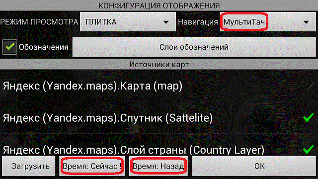 “Навигация” - пользователь может выбрать способ перемещения по карте. “Обозначения” - включение/выключение надписей на карте. “Источники карт” - пользователь может выбрать слои изображения из списка. Кнопка «Загрузить» загружает источники карт из сервера. “Время: Сейчас!” - переходит на текущее время отображения карты. “Время: Назад” - переходит на указанное время в истории карты. Позволяет выбрать время в прошлом, в котором будет отображаться карта.
|
|
Основные операции |
|
1. Создание точки интереса (метки на карте) . Для создания точки интереса на карте нужно открыть окно трекера (кнопка “@”). 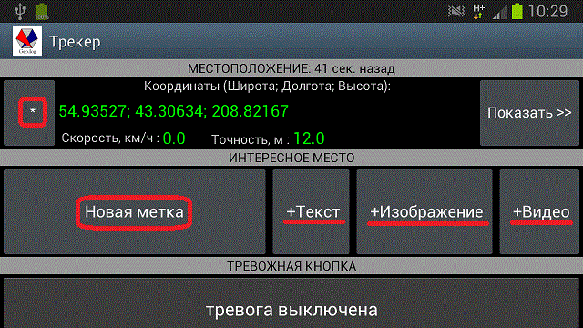 Определение местоположения GPS должно быть включено на уровне установок телефона и текущая позиция должна быть доступна. Если местоположение было определено давно, то получить текущее значение можно нажав кнопку “*”. Далее, нажимаем кнопку «Новая метка», в появившемся окне вводим имя (если нужно), и нажимаем кнопку «Создать». После того как метка создана, Вы можете прикрепить к ней данные: Текст, Изображение, Видеоклип. Размер прикреплений практически неограничен (на данный момент ограничение: 500 Мб), т.е. можете добавить полное видео-описание места. В итоге на карте появится метка, которая будет доступна другим (или будет частной, если это указано при создании). 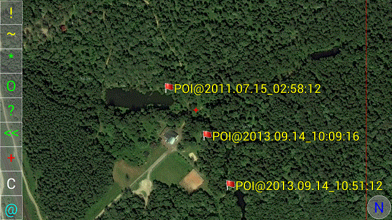 Если нажать на метку, то появится окно со списком прикрепленных к ней данных, которые можно просмотреть кликнув на них. 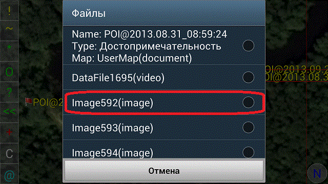 В итоге, выбрав изображение, видим снимок места: 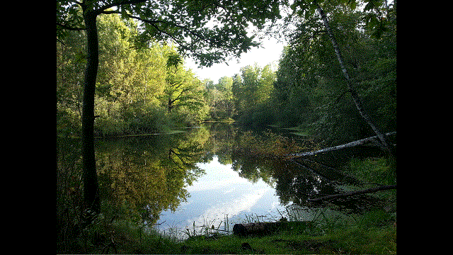 2. Рисование на карте. Для того, чтобы нарисовать что-нибудь на карте нужно открыть окно графического редактора (кнопка “+”). 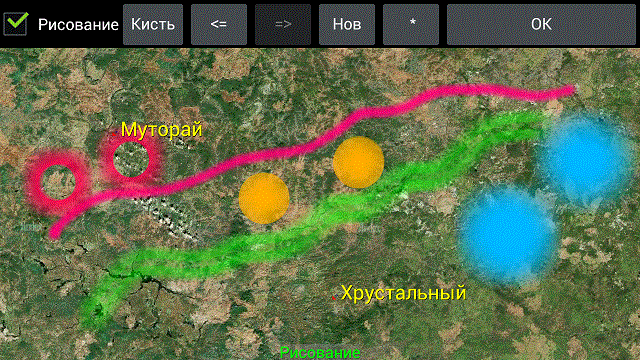 Рисуем пальцем или стилусом. Стили кисти и цвет выбирается в меню. По завершении процесса нажимаем «ОК». Откроется окно сохранения рисунка. На нем вводим его имя, выбираем частный/общий доступ и пункт «Сбросить изображение после записи». Если выбрали сброс, то рисунок не появится на карте (поскольку короткоживущий), но будет доступен в списке «Мои места» основного окна. В другом случае, Вам предстоит выбрать интервал жизни рисунка на карте(день, неделя, месяц). После этого времени он не будет виден ни Вам ни другим пользователям. 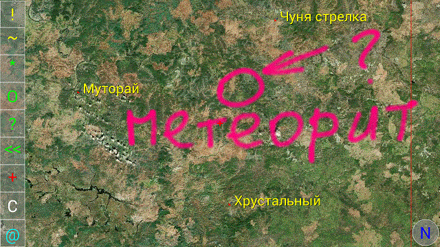 3. Наблюдение за подвижным объектом. Для того чтобы мониторировать местоположение и состояние объекта нужно его добавить в список «Мои объекты» (кнопка “O”) главного экрана. Добавляется объект по номеру, вводится также его имя. 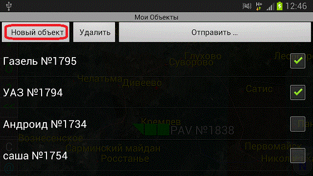 На карте показываюся только те объекты из списка, которые выделены галочками. 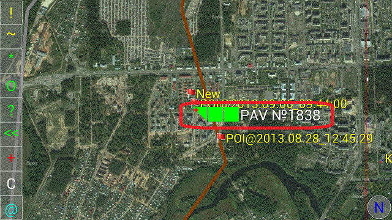 Нажав на маркер объекта получаем панель его свойств, где можно получить информацию о нем, а также, включить видео/аудио мониторирование (передача: вкл, аудио: вкл/видео: вкл, запуск — запись: вкл). В режиме мониторирования становится активной кнопка «Просмотр», нажав которую, пользователь имеет возможность наблюдать за объектом в режиме реального времени. Кнопка «Видео-телефон» даёт возможность связаться с пользователем данного объекта в режиме телефона. 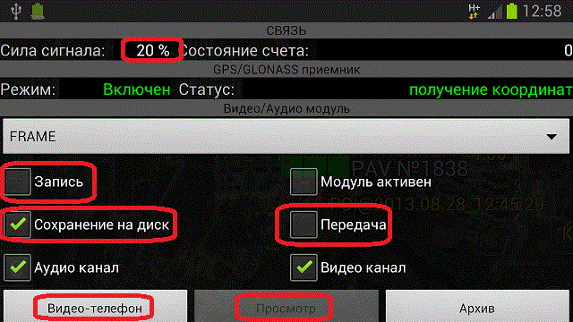 * Операции описанные выше доступны только для зарегистрированных пользователей. Для того чтобы зарегистрироваться, откройте форму конфигурации.
© 2013 geo-log.googlecode.com |